Calcific aortic valve disease (CAVD) is a progressive cardiovascular disorder affecting over 12.6 million people worldwide, yet it remains undetected until advanced stages when observable changes in hydrodynamics emerge. This dissertation proposes and validates hemodynamic wall metrics — time-averaged wall shear stress (TAWSS) and oscillatory shear index (OSI) — as pre-symptomatic biomarkers of CAVD, detectable through computational fluid-structure interaction (FSI) simulations before conventional hydrodynamic parameters show any sign of disease.
The aortic valve (AV) is a tri-leaflet structure separating the left ventricle from the aortic outflow tract. Each leaflet comprises three ECM layers — the ventricularis (elastin-rich, flow-facing), spongiosa (proteoglycan-rich core), and fibrosa (collagen-rich, pressure-bearing) — each serving distinct mechanical roles. Calcific aortic valve disease (CAVD) begins as asymptomatic aortic valve sclerosis: calcific nodules form primarily along the coaptation lines and spread toward the leaflet belly, progressively restricting leaflet motion and narrowing the outflow tract (aortic stenosis, AS).
CAVD affects 12.6 million people globally (2017) and prevalence is expected to double over the next 50 years. No pharmacological treatment exists — the only definitive therapy is surgical aortic valve replacement (SAVR) or, increasingly, transcatheter AV replacement (TAVR). TAVR has surpassed SAVR as the preferred approach since it is minimally invasive, requires no cardiopulmonary bypass, and patients are often discharged the same day. However, both approaches intervene only after disease has progressed to a symptomatic, surgically operable stage.
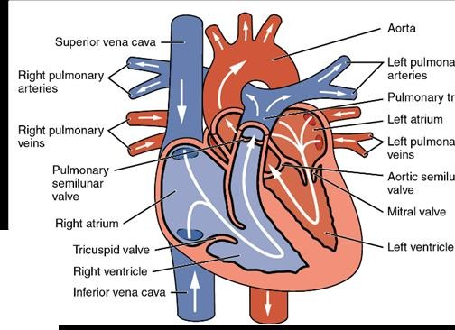
Figure 2-1. Human blood circulation diagram showing the heart and both the systemic and pulmonary circuits. The aortic valve is located at the exit of the left ventricle, controlling outflow into the aorta.
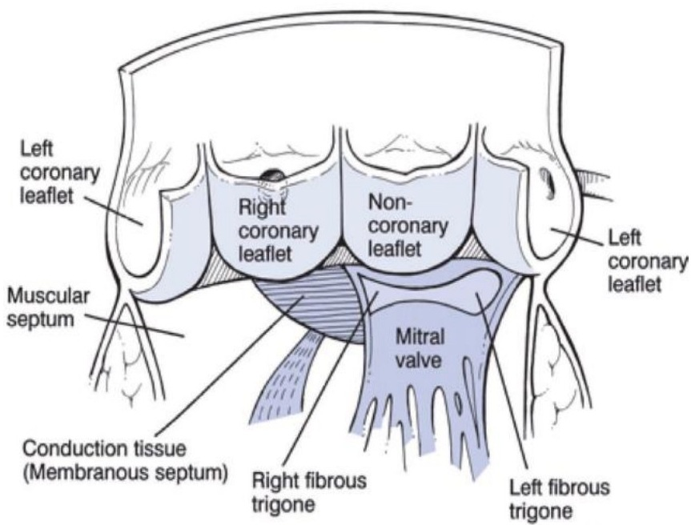
Figure 2-2. Cut-open view of the aortic and mitral valve leaflets, showing the right coronary (R), left coronary (L), and non-coronary (N) cusps, along with the coronary outflow locations and fibrous trigones.
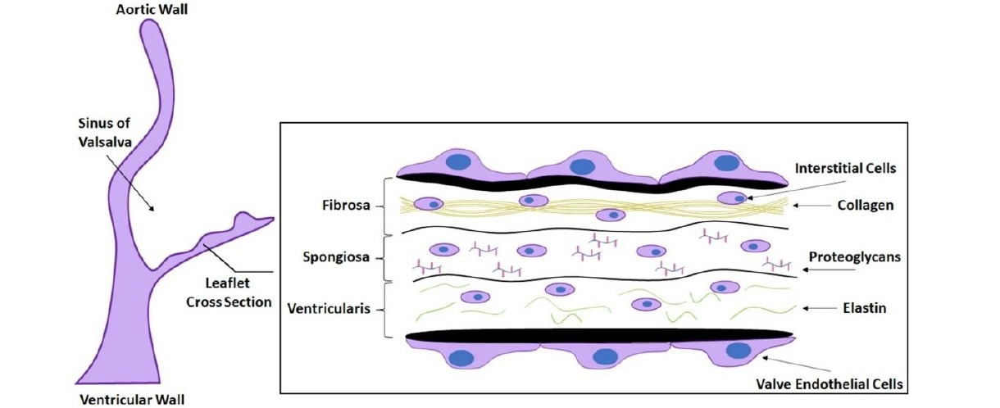
Figure 2-3. Cross-section of a human aortic valve leaflet showing the tri-layer extracellular matrix (ECM): the ventricularis (elastin-rich, flow-facing), the spongiosa (proteoglycan-rich core), and the fibrosa (collagen-rich, pressure-bearing). Valve interstitial cells (VICs) and endothelial cells (VECs) populate each layer and are the primary cellular mediators of calcification.
The Clinical Problem
CAVD is asymptomatic in its early stages. Standard hydrodynamic parameters (ΔP, EOA, Qrms, RF) show no significant deviation from normal until the disease has advanced — making early intervention impossible without better biomarkers.
Hemodynamic Hypothesis
Abnormal wall shear stress (WSS) drives adverse endothelial cell remodeling and has been linked to atherosclerosis in arteries. This dissertation tests whether TAWSS and OSI serve similar roles as pre-symptomatic CAVD biomarkers at the valve leaflet surface.
Computational Methods
Patient-specific fluid-structure interaction (FSI) simulations in LS-DYNA and ANSYS using the arbitrary Lagrangian-Eulerian (ALE) method — Lagrangian solid domain tracking leaflet deformation, Eulerian fluid domain capturing blood flow through a deforming mesh.
CH. 4
Non-Newtonian Blood Modeling in Severely Calcified Valves
Published · J. Biomech. Eng. 2022
Wall shear stress predictions in cardiovascular CFD depend critically on the fluid viscosity model. In arteries, high shear rates keep blood in the Newtonian regime (constant viscosity), making the Newtonian approximation acceptable. The aortic valve, however, features complex geometry, dynamic motion, and crevice regions between calcific nodules where blood slows dramatically — conditions that may break the Newtonian assumption.
A patient-specific CT-reconstructed severely calcified human aortic valve (82-year-old female, Materialise Heart Print catalog) was computationally modeled across three configurations (diastole, early systole, peak systole) under both Newtonian and non-Newtonian (Carreau-Yasuda) viscosity models. The Carreau-Yasuda model captures shear-thinning: at low shear rates, blood viscosity rises substantially above the Newtonian constant.
Key Finding: The fibrosa (pressure-bearing) surface of severely calcified leaflets, particularly within the crevice regions between nodules, experiences shear rates below the Newtonian threshold. Under these conditions, blood viscosity is significantly higher than the Newtonian constant — leading Newtonian models to artificially underpredict WSS in precisely the regions most relevant to CAVD progression. Accurate FSI modeling of severely calcified valves therefore requires a non-Newtonian viscosity model.
Newtonian Underprediction
Newtonian models produced artificially lower WSS in fibrosa crevice regions compared to non-Newtonian models — because they cannot capture the increased viscosity at low shear rates.
Clinical Implication
If biomarker studies use Newtonian models for severe CAVD, WSS predictions will be systematically biased — potentially masking the true hemodynamic signal linked to calcification and thrombosis risk.
Design Decision
All subsequent FSI simulations in this dissertation use non-Newtonian blood models where appropriate, informed by local shear rate assessments.
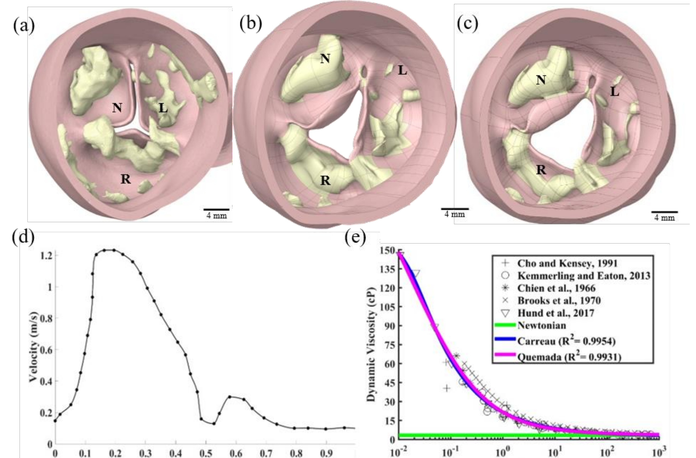
Figure 4-1. CFD model preparation. (a–c) CT-reconstructed severely calcified human aortic valve in diastolic, early-systolic, and peak-systolic configurations. (d) Inlet velocity profile boundary condition. (e) Non-Newtonian viscosity model fittings — Carreau (R²=0.9954) and Quemada (R²=0.9931) models fitted to experimental blood rheology data.
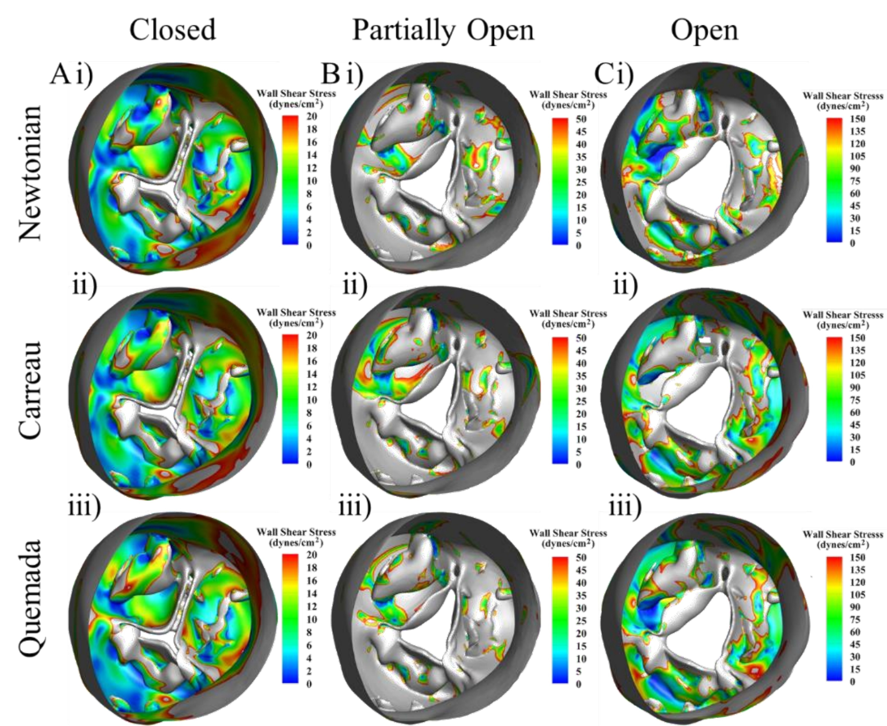
Figure 4-3. Fibrosa-side quasi-static wall shear stress (WSS) for each valve configuration — closed (A), partially open (B), and fully open (C) — comparing Newtonian (i), Carreau (ii), and Quemada (iii) models. Crevice regions around calcific nodules show substantially higher WSS under non-Newtonian models, where increased viscosity at low shear rates amplifies the predicted stress.
1
Mirza A*, Ramaswamy S. Importance of Non-Newtonian Computational Fluid Modeling on Severely Calcified Aortic Valve Geometries.
Journal of Biomechanical Engineering. 2022;144(11). ASME.
Early-Stage CAVD Biomarkers Using PSIS Bioscaffold Valves
Core Aim 1
The central challenge of CAVD biomarker development is capturing the pre-symptomatic stage — when standard clinical parameters show no abnormality but calcification is already altering the valve's mechanical and hemodynamic environment. This chapter creates and characterizes an in vitro early-stage CAVD model using porcine small intestinal submucosa (PSIS) bioscaffolds seeded with valve interstitial cells (VICs) and valve endothelial cells (VECs) cultured in pro-calcific media, then evaluates whether TAWSS and OSI can detect disease that hydrodynamics cannot.
PSIS scaffold preparation
→
VIC/VEC seeding
→
Pro-calcific media (7 days)
→
Hydrodynamic testing (Vivitro)
→
Nanoindentation
→
FSI simulation
→
TAWSS / OSI analysis
Experimental Groups (n=3 per group)
Group A — Raw PSISHealthy control; no cells, no culture
Group B — Static CalcificPSIS + VIC/VEC in pro-calcific media, no flow (OSI = 0, static culture, 7 days)
Group C — Bioreactor CalcificPSIS + VIC/VEC in pro-calcific media + oscillatory shear (OSI = 0.5, 3–4 dyn/cm², 7 days)
p<0.05
Nanoindentation stiffness difference: healthy vs. calcified
+28%
TAWSS increase: healthy → mildly calcified
↓ OSI
Reduction in oscillatory shear index with calcification
No Δ
Hydrodynamic parameters (ΔP, RF, EOA, Q) between groups
Key Finding: Conventional hydrodynamic parameters (ΔP, RF, Qrms, EOA) showed no statistically significant differences between healthy and mildly calcified PSIS valves — consistent with clinical observations of CAVD's asymptomatic early phase. However, nanoindentation revealed significantly increased stiffness (p<0.05) in calcified valves, and FSI simulations showed a 28% increase in TAWSS and reduction in OSI. TAWSS and OSI are therefore measurable hemodynamic biomarkers of early-stage, pre-symptomatic CAVD.
The Alizarin Red staining confirmed calcification in Groups B and C but not Group A. The Vivitro Pulse Duplicator system (70 bpm, 100 mmHg mean arterial pressure, 35% systolic fraction) verified that all valves functioned similarly at the macro hydrodynamic level. FSI simulations used a three-parameter incompressible Mooney-Rivlin hyperelastic model for valve leaflets and a variational multiscale turbulence model for the saline fluid domain (Re ≈ 9,800).
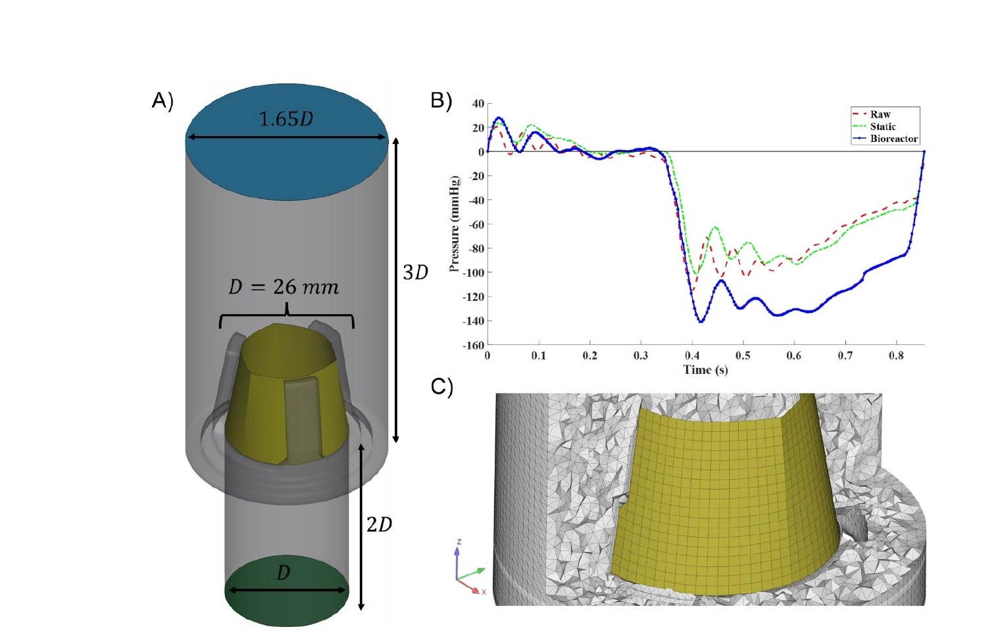
Figure 5-2. Computational model information. (A) Aortic valve conduit and scaffold geometry with dimensions scaled to valve diameter D. (B) Inlet pressure differential boundary conditions for Raw (red), Static (green), and Bioreactor (blue) groups across a cardiac cycle. (C) Cross-sectional view of the finalized volume mesh showing boundary layers inflated along the scaffold surface.
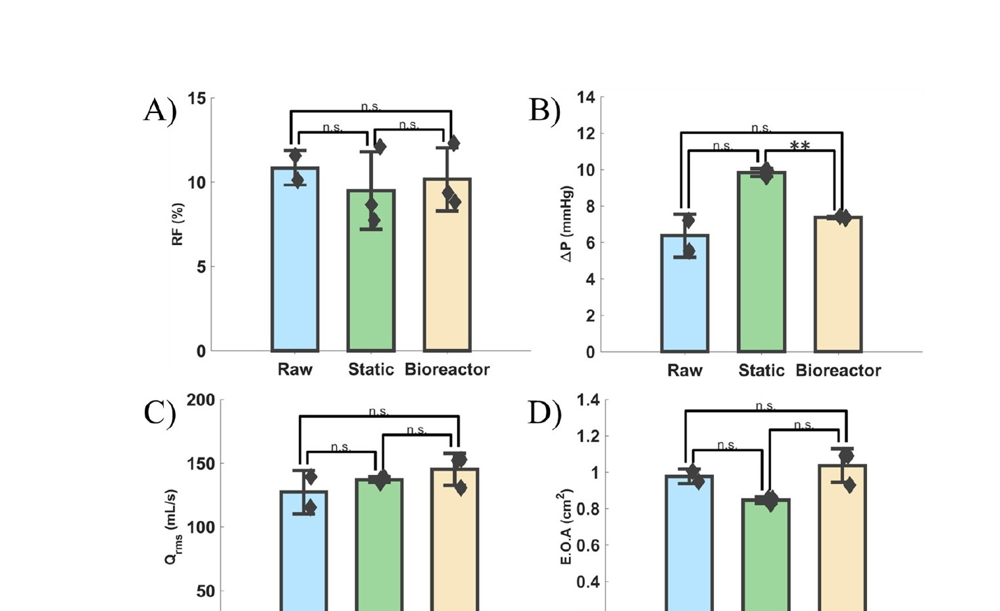
Figure 5-3. Hydrodynamic results from the Vivitro Pulse Duplicator. Bar graphs of RF, ΔP, Qrms, and EOA show no statistically significant differences between Raw, Static, and Bioreactor groups — confirming that early-stage CAVD is hemodynamically silent at the macro level. n.s. = p > 0.05.
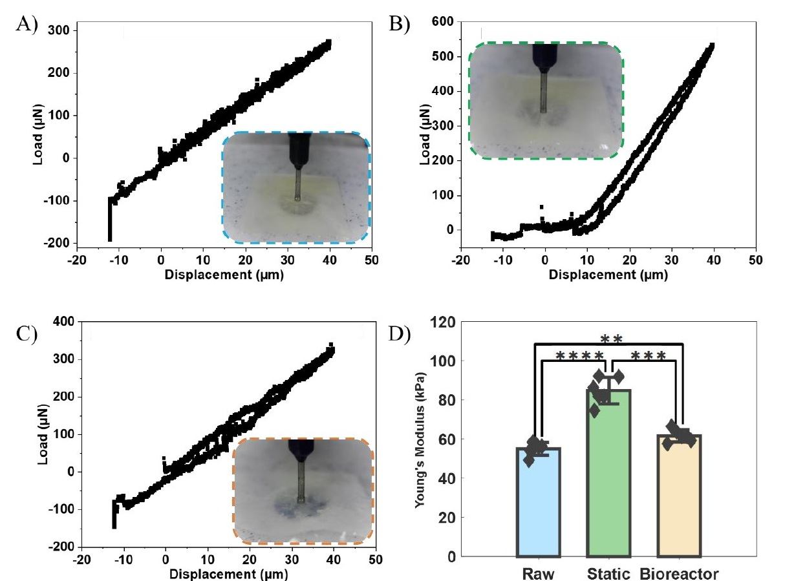
Figure 5-4. Nanoindentation results. (A–C) Load vs. displacement curves for Raw, Static, and Bioreactor PSIS groups. (D) Young's Modulus comparison — both calcified groups show significantly elevated stiffness versus the Raw control (** p<0.01, *** p<0.001, **** p<0.0001), confirming a measurable mechanical signal of early CAVD that hydrodynamics cannot detect.
CH. 6
Mouse Aortic Valve Model — Coronary Cusp Calcification Discrepancy
Core Aim 2
In human CAVD, the non-coronary cusp (NCC) consistently shows greater calcification severity than the right coronary cusp (RCC) or left coronary cusp (LCC). Paradoxically, in many mouse models of CAVD, the RCC shows the greatest calcification — the reverse of the human pattern. This discrepancy has limited mouse-to-human translational inference in CAVD research. Understanding why requires interrogating the hemodynamic environment of the mouse coronary ostia — the small openings through which blood enters the coronary arteries.
A parametrized mouse aortic valve model was developed in SolidWorks. The key variable: the right coronary ostium height (ROH) relative to the coaptation point. In mice, this distance varies considerably compared to humans. The hypothesis: when ROH is below the coaptation point, blood actively perfuses through the RCC region, generating higher shear rates and protective hemodynamics on the RCC. When ROH exceeds the coaptation point, the RCC's hemodynamic environment mirrors the NCC — low-shear, oscillatory — predisposing it to greater calcification.
Mouse vs. Human
Mice have greater variability in right coronary ostium height relative to the coaptation point compared to humans. This anatomical variability, not an intrinsic species difference, drives the reversed calcification pattern.
Mechanism
When the right ostium height exceeds the coaptation point, blood perfusion through the RCC region is reduced — causing RCC hemodynamics to resemble the NCC (low shear, high OSI) rather than showing the protective high-shear pattern typical of coronary-side cusps in humans.
Translational Impact
This computational finding offers a mechanistic explanation for why mouse CAVD models cannot be assumed to replicate human calcification patterns — and suggests controlling coronary ostium geometry when selecting or engineering mouse models for valve research.
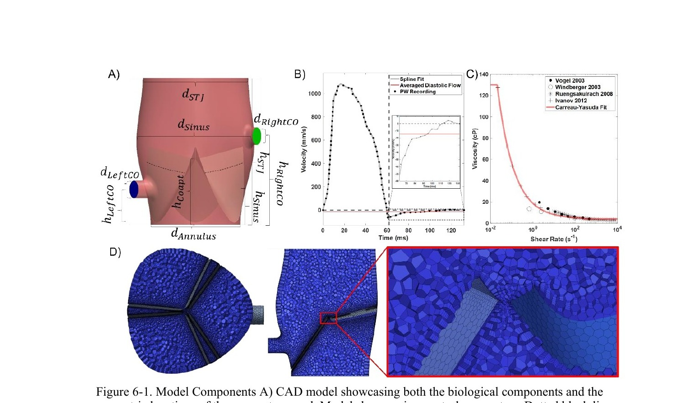
Figure 6-1. Mouse aortic valve model components. (A) Parametrized CAD model showing anatomical features and the right coronary ostium height (hRightCO) variable. (B) Inlet velocity waveform from pulsed-wave Doppler recordings — raw data (circles), spline fit (gray), and constant diastolic average (red). (C) Murine-specific Carreau-Yasuda viscosity fit. (D) Polyhedral mesh with boundary layers inflated around the coaptation point.
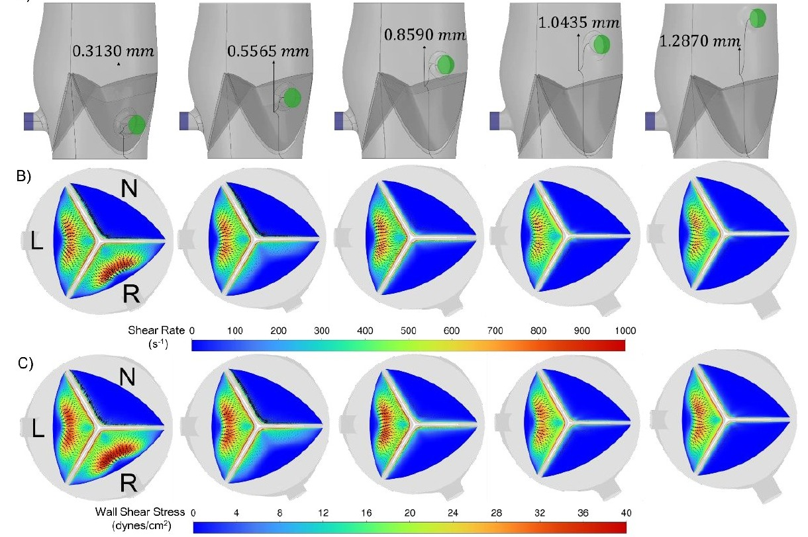
Figure 6-2. Right coronary ostium variation wall metrics. (A) Valve geometries across five hRightCO values (0.3130–1.2870 mm). (B) Fibrosa-side shear rate distributions. (C) Fibrosa-side wall shear stress distributions. As hRightCO increases past the coaptation point, the RCC shear distribution converges toward the low-shear, oscillatory NCC pattern — mechanistically explaining the reversed cusp calcification pattern in mouse CAVD models.
CH. 7
Parametric Pipeline: Valve Size × CAVD Severity
Core Aim 3 · Published · Bioengineering 2024
The final aim scales the biomarker framework to a clinically representative population by systematically varying both valve annular size (22–30 mm, the full clinical range) and CAVD severity (Grades 1–6). This required two major computational contributions: (1) a parametrized healthy aortic valve model that automatically scales all anatomy to any given annulus diameter, and (2) a Python-based calcification generator running in Blender that programmatically deposits calcific nodules of varying grade onto any leaflet geometry.
Calcification Grading Schema (Bahler et al.)
Grade 1 — NoneNo nodules
Grade 2 — MinimalLocalized deposits, no dense areas
Grade 6 — SevereNodules on all leaflets, both ventricularis and fibrosa surfaces
The calcification generator used Blender's metaball objects (non-mesh clay-like forms that merge organically) to place nodules along leaflet free edges and belly regions, then converted and remeshed the result with a Perlin noise displacement modifier to eliminate artificial surface regularities — producing morphologically realistic calcific deposits. All deposits were scaled consistently by the annulus diameter (dAnnulus) to ensure cross-size comparability.
50+
Total FSI simulations across all size–grade combinations
4
Valve annular sizes (22, 25, 27, 30 mm)
6
CAVD grades (1–6, None→Severe)
R²>0.85
Validation against ex vivo hydrodynamic data
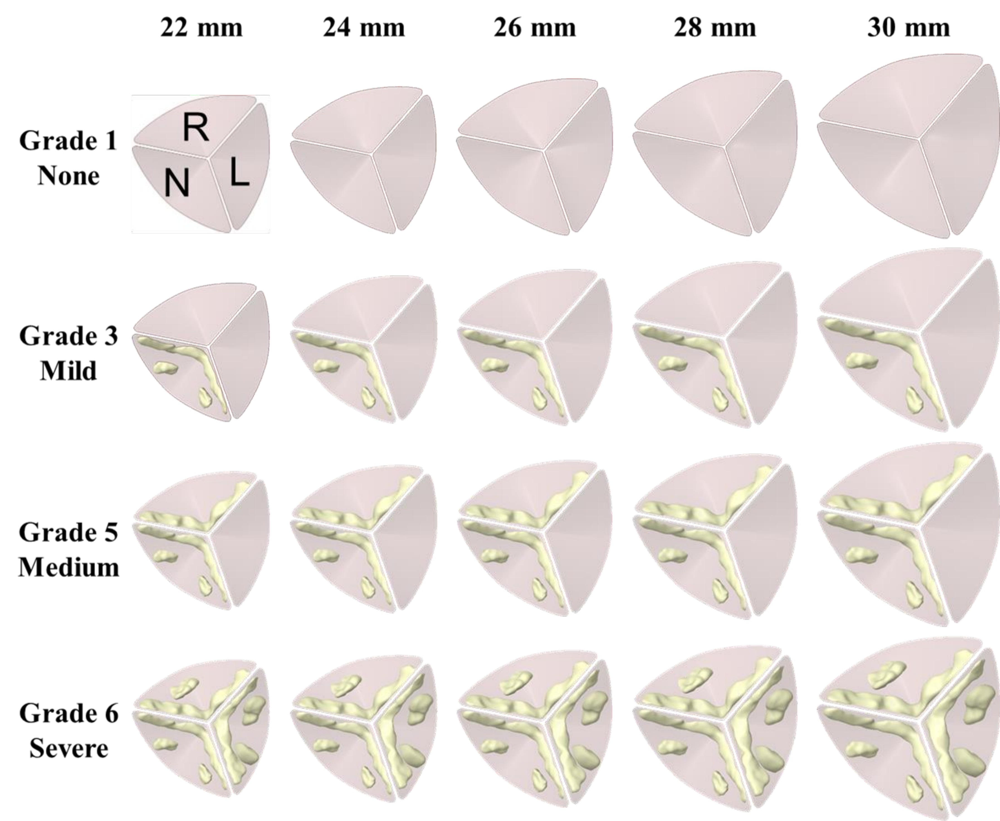
Figure 7-1. Short-axis view from the aortic side depicting CAVD intensities across multiple valve sizes. Rows: Grade 1 (None), Grade 3 (Mild), Grade 5 (Medium), Grade 6 (Severe). Columns: 22–30 mm annular diameters. N, R, L = non-coronary, right coronary, left coronary cusps.
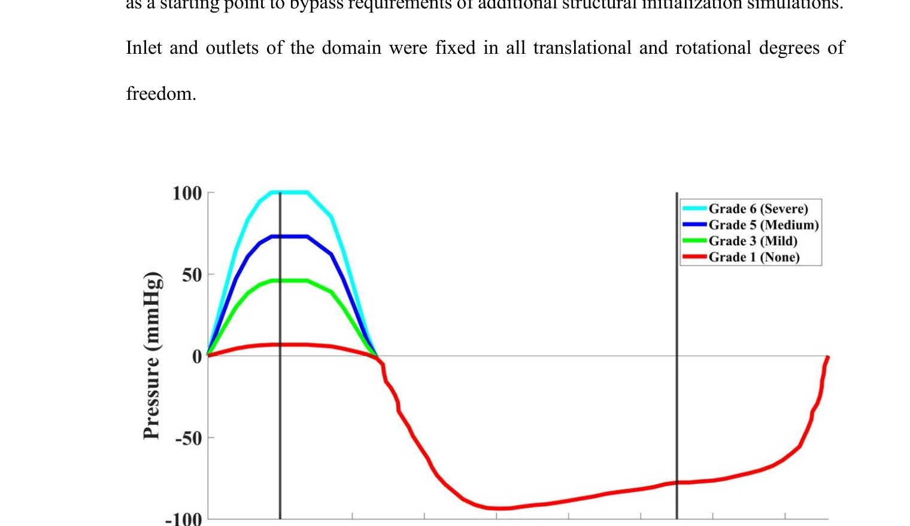
Figure 7-2. Inlet differential pressure boundary conditions for each CAVD grade across one cardiac cycle. Grade 6 peaks at 100 mmHg; Grade 1 peaks at ~7 mmHg — consistent with clinical AS grading thresholds. Systolic and diastolic peaks are marked with vertical lines (t = 0.10 s and t = 0.65 s).
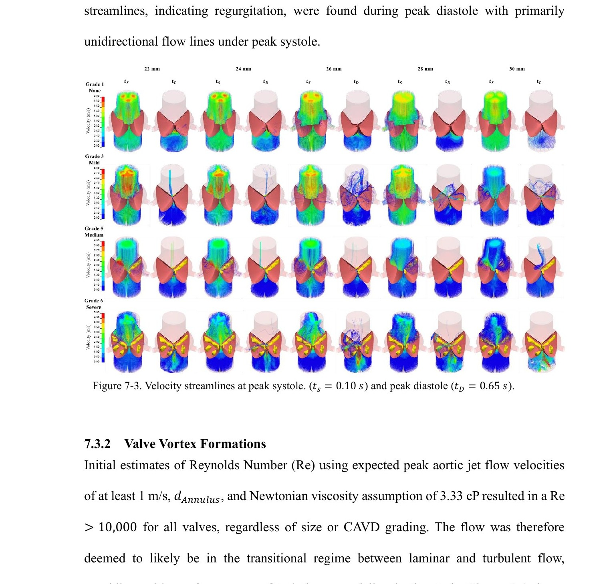
Figure 7-3. Velocity streamlines at peak systole (ts = 0.10 s) and peak diastole (tD = 0.65 s) across all CAVD grades and valve sizes. Grade 1 shows symmetric outflow. Grades 3 and 5 produce asymmetric jets. Grade 6 shows the most turbulent flow with the largest reverse streamlines during diastole.
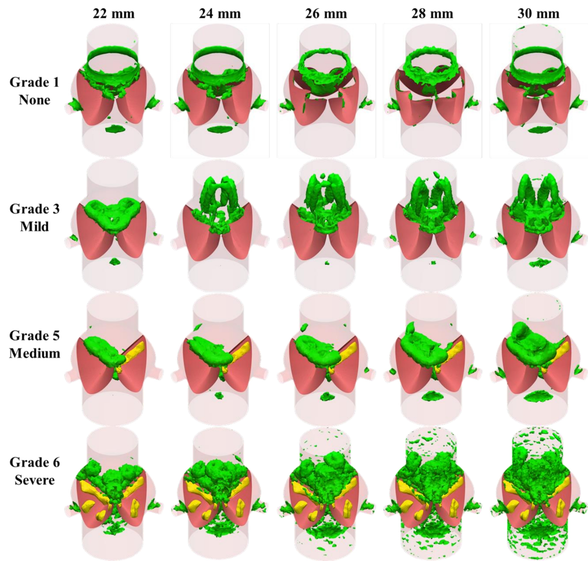
Figure 7-4. Q-criterion vortex formations at peak systole across all grades and sizes. Grade 1 shows a symmetric ring vortex. Higher grades produce larger, more disturbed ring structures extending past the sinotubular junction. Asymmetric grades (3, 5) generate eccentric wakes linked to downstream aortic wall stress.
Key Finding — Hemodynamic gradient: TAWSS increased and OSI decreased monotonically with CAVD grade across all valve sizes. These metrics were trackable across the full severity spectrum, from pre-symptomatic (Grade 1–2) to severe (Grade 5–6), providing a computational framework for CAVD staging.
Key Finding — Valve size effect: Larger annular valves showed marginally lower TAWSS and higher OSI than smaller valves at equivalent CAVD grades — suggesting a slight hemodynamic protective effect of larger valve size, possibly related to the larger sinus volume reducing the severity of jet-driven shear concentration. Hydrodynamic metrics (ΔP, Vmax, EOA) were consistent with established echocardiographic thresholds for AS grading.
Key Finding — Flow asymmetry: Grade 3 and Grade 5 valves, where only one or two leaflets are predominantly affected, produced highly asymmetric aortic jets and recirculating turbulent zones — a pattern linked in the literature to aortic dilation morphotypes and elevated aortic wall WSS downstream.
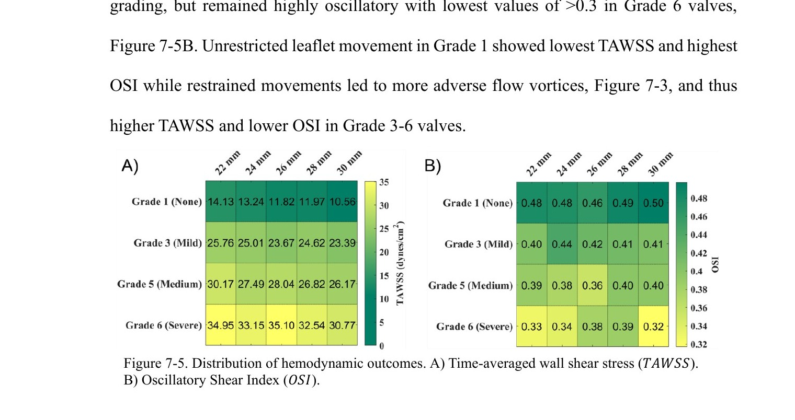
Figure 7-5. Hemodynamic outcome distributions. (A) TAWSS (dynes/cm²) increases with CAVD grade and decreases with valve size. (B) OSI decreases with grade and increases with size. Together, TAWSS and OSI provide a trackable hemodynamic signature of CAVD severity across all clinically relevant valve sizes.
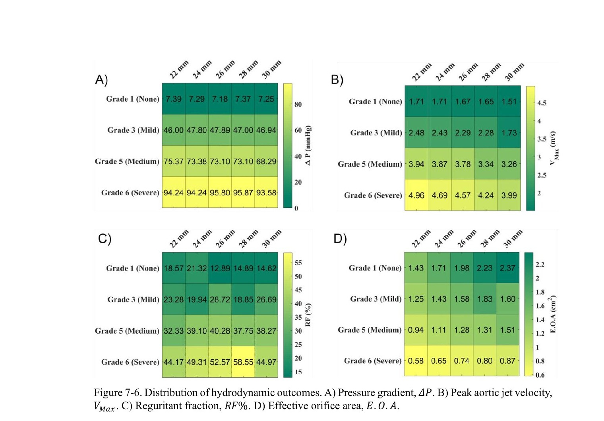
Figure 7-6. Hydrodynamic outcome distributions. (A) Pressure gradient ΔP. (B) Peak aortic jet velocity VMax. (C) Regurgitant fraction RF%. (D) Effective orifice area EOA. Results match established clinical echocardiographic thresholds for AS severity grading, validating the computational model.
2
Mirza A*, Hsu C-PD, Rodriguez A, Alvarez P, Lou L, Sey M, Agarwal A, Hutcheson JD*, Ramaswamy S. Computational Model for Early-Stage Aortic Valve Calcification Shows Hemodynamic Biomarkers.
This dissertation establishes the computational and experimental foundation for TAWSS and OSI as pre-symptomatic hemodynamic biomarkers of CAVD — measurable through FSI simulation before conventional clinical parameters detect any disease.
The four-chapter research arc demonstrates: (1) the viscosity model matters in severe CAVD — non-Newtonian modeling is required for accurate WSS prediction; (2) TAWSS and OSI detect early-stage CAVD when hydrodynamics cannot; (3) coronary ostium geometry explains the paradoxical mouse calcification pattern; and (4) a scalable parametric pipeline quantifies hemodynamic biomarker signatures across the full clinical spectrum of valve sizes and disease severities.
Immediate Next Step
Validate the parametric FSI model against pre- and post-TAVR MRI/CT data from at least 3 patients per valve size category (22–30 mm) across CAVD grades — correlating computational TAWSS/OSI with physician calcium scoring and post-operative hemodynamics.
Clinical Translation
Develop a patient-specific CAVD tracking pipeline: CT/MRI → parametrized valve reconstruction → FSI simulation → TAWSS/OSI biomarker extraction → longitudinal disease trajectory prediction. Target: identify candidates for early intervention before symptomatic threshold.
Therapeutic Development
The computational framework provides a testbed for evaluating proposed pharmacological treatments for CAVD. By simulating early-stage disease under intervention (lipid-lowering, anti-calcification agents), the pipeline could predict hemodynamic response before costly in vivo trials.
The work presented here represents the first systematic computational demonstration that hemodynamic biomarkers can delineate CAVD severity across the clinical spectrum of valve sizes — providing a theoretical framework for pre-symptomatic CAVD detection and a scalable tool for population-level hemodynamic modeling of aortic valve disease.
PhD Dissertation · Asad Mirza · FIU Biomedical Engineering · Defended June 26, 2024 ·
Advisor: Dr. Sharan Ramaswamy
Figure 5-1: PSIS bioscaffold valves sutured into tri-leaflet configuration. Left: raw PSIS control. Right: pro-calcific media conditioned groups (static and bioreactor). Alizarin Red staining confirmed calcium deposition in culture groups.
Figure 5-2: Vivitro Pulse Duplicator hydrodynamic results. No significant differences in ΔP, RF, Qrms, or EOA across groups — confirming that early-stage CAVD is hemodynamically silent at the macro level.
Figure 5-3: Young's modulus from nanoindentation. Both calcified groups show significantly higher stiffness (p < 0.01) than the raw PSIS control — a measurable mechanical signal of early CAVD that hydrodynamics cannot detect. FSI-computed TAWSS increased 28% and OSI decreased correspondingly.
Figure 6-1: Parametrized mouse aortic valve model in SolidWorks. Key variable: right coronary ostium height (ROH) relative to the leaflet coaptation point. Multiple ROH values were simulated to isolate hemodynamic effects on each cusp.
Figure 6-2: CFD hemodynamic results across mouse valve configurations. When ROH exceeds the coaptation point, the RCC shear distribution converges toward the low-shear, oscillatory NCC pattern — mechanistically explaining the reversed cusp calcification observed in mouse CAVD studies.